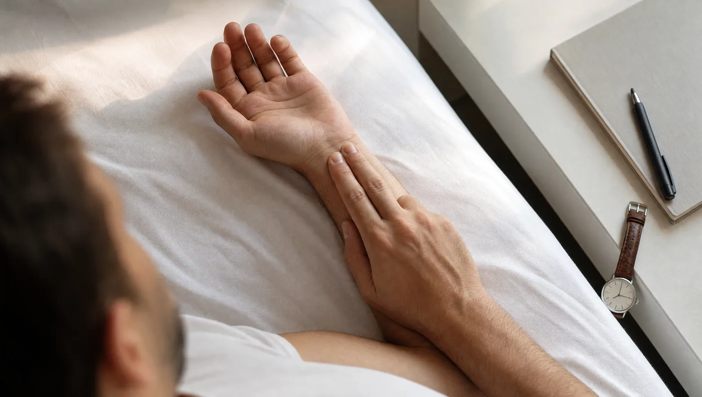
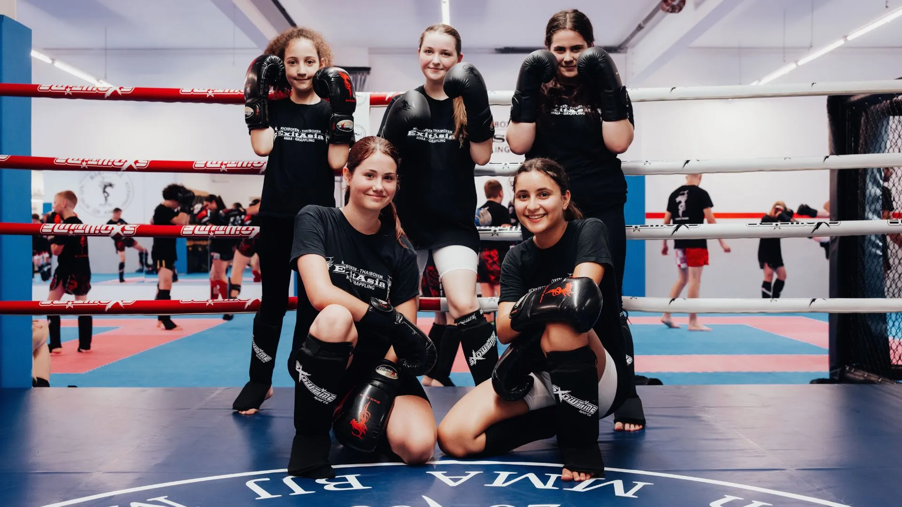

Es gibt einen Satz, den wir in der Halle jedes Jahr hören, meistens im Februar und noch einmal im Herbst: „Ich trainiere gerade mehr als je zuvor — und werde schlechter.“ Der Satz kommt fast nie von Anfängern. Er kommt von Leuten, die seit ein, zwei Jahren dabei sind, die es ernst meinen und die genau deshalb den Fehler machen, der am schwersten zu sehen ist: Sie behandeln Erholung als das, was übrig bleibt, wenn kein Training stattfindet.
Die Anzeichen tauchen in einer ziemlich festen Reihenfolge auf, und man kann sie messen. Zu den drei Werten, mit denen das geht, gehört allerdings auch die Frage, wo sie versagen. Diesen Teil lassen die meisten Artikel weg. Er verkauft sich schlechter als ein Ring am Handgelenk.
Wichtig vorweg: Dieser Artikel ist Trainingswissen, keine medizinische Beratung und keine Diagnose. Anhaltende Leistungseinbrüche, Herzrasen, Fieber oder Beschwerden, die nicht weggehen, gehören ärztlich abgeklärt. Das gilt besonders, wenn du Vorerkrankungen hast oder Medikamente nimmst.
Was ist Übertraining eigentlich — und was nicht?
Der Begriff wird umgangssprachlich für alles benutzt, von schweren Beinen bis zum Formtief. Sportwissenschaftlich ist er enger gefasst. Das gemeinsame Konsenspapier des European College of Sport Science und des American College of Sports Medicine (Meeusen und Kollegen, 2013) unterscheidet drei Stufen, und dieser Unterschied ist der wichtigste Satz des ganzen Themas.
Erfolgreiches Training muss überlasten. Das ist kein Nebeneffekt, das ist der Mechanismus. Problematisch wird laut dem Konsenspapier erst die Kombination aus zu viel Reiz und zu wenig Erholung. Die kurzfristige Leistungsdelle danach heißt funktionelles Überlasten und führt nach der Erholung zu besserer Leistung als vorher. Wer dagegen das Verhältnis von Belastung und Erholung dauerhaft nicht respektiert, landet beim nicht-funktionellen Überlasten. Die Abgrenzung zwischen diesem Zustand und dem eigentlichen Übertrainingssyndrom nennen die Autoren ausdrücklich sehr schwierig: Sie hängt vom klinischen Verlauf ab und ist eine Ausschlussdiagnose.
Die drei Stufen — und wie lange sie dauern
| Stufe | Was passiert | Dauer bis zur Erholung | Was danach kommt |
|---|---|---|---|
| Funktionelles Überlasten | Kurzfristiger Leistungsabfall nach einem harten Block, ohne schwerwiegende Begleiterscheinungen | Tage bis rund zwei Wochen | Leistung liegt über dem Ausgangsniveau, das ist der geplante Fall |
| Nicht-funktionelles Überlasten | Stagnation oder Leistungsabfall, der bleibt; Stimmung und Schlaf kippen mit | Wochen bis Monate | Kein Zugewinn. Die Zeit ist verloren, nicht investiert |
| Übertrainingssyndrom | Anhaltende Fehlanpassung; nur durch Ausschluss anderer Ursachen zu bestimmen | Monate und länger | Gehört ärztlich abgeklärt, nicht selbst behandelt |
Einordnung nach dem Konsenspapier von ECSS und ACSM (Meeusen et al., 2013, Medicine & Science in Sports & Exercise). Die Zeitangaben sind Orientierungswerte, keine Fristen.
Warum das praktisch wichtig ist: Die erste Stufe brauchst du. Wer nie in eine Leistungsdelle gerät, trainiert vermutlich zu vorsichtig, um besser zu werden. Die Kunst besteht nicht darin, Ermüdung zu vermeiden, sondern darin, sie zu timen. Und dazu musst du merken, wann du die erste Stufe verlässt.
Welche Symptome treten auf — und in welcher Reihenfolge?
Die üblichen Listen sortieren alphabetisch oder gar nicht. Das ist der Grund, warum sie niemandem helfen: Wenn du bei „häufige Infekte“ angekommen bist, hättest du drei Wochen vorher schon etwas ändern können. Nützlicher ist die zeitliche Reihenfolge, und die ist in der Halle wie in den Studien erstaunlich konstant.
Zuerst geht die Lust. Nicht die Kraft, nicht der Puls — die Motivation. Das Training, auf das du dich vier Monate lang gefreut hast, fühlt sich plötzlich nach Pflicht an. Wer das ernst nimmt, kommt oft mit drei ruhigen Tagen davon. Das Problem ist, dass genau diese Leute Disziplin gelernt haben und sich über das Signal hinwegsetzen.
Dann kippt der Schlaf. Das ist paradox und deshalb ein so verlässliches Zeichen: Du bist müder als sonst und schläfst trotzdem schlechter. Untersucht wurde das an 27 trainierten Triathleten (Hausswirth et al., 2014). Neun von achtzehn Sportlern der Belastungsgruppe rutschten in ein funktionelles Überlasten, und nur bei genau dieser Gruppe sank die objektiv gemessene Schlafdauer um rund 8 % und die Schlafeffizienz um etwa 1,6 %. In der anschließenden Entlastungsphase kehrte sich beides wieder um.
Danach fällt die Leistung. Und zwar an einer sehr spezifischen Stelle: nicht bei der ersten Wiederholung, sondern bei der letzten. Die Aufwärmrunde fühlt sich normal an, die dritte Runde nicht mehr. Technik, die längst saß, wird wieder unsauber, wenn du müde wirst. Und du wirst früher müde als vor vier Wochen.
Zuletzt kommt der Körper. Infekte, die sich hinziehen. Ein Ruhepuls, der oben bleibt. Reizbarkeit, die auch das Umfeld bemerkt. In derselben Triathleten-Untersuchung traten Atemwegsinfekte bei der überlasteten Gruppe häufiger auf. Wenn du hier ankommst, redet nicht mehr das Training mit dir, sondern das Immunsystem.
Normale Ermüdung oder Warnsignal?
| Beobachtung | Normal nach hartem Training | Wird zum Warnsignal, wenn… |
|---|---|---|
| Müdigkeit | Am Tag danach deutlich, dann besser | …sie nach dem Ruhetag noch da ist |
| Schlaf | Tief, oft länger als sonst | …du müder bist und trotzdem schlechter schläfst |
| Trainingslust | Schwankt, kommt zurück | …sie über zwei Wochen weg bleibt |
| Leistung | Delle nach Belastungsblock, dann Sprung nach oben | …sie trotz Entlastung nicht zurückkommt |
| Ruhepuls | Einzelne Ausreißer nach oben | …der Wochenschnitt dauerhaft über deinem Normalwert liegt |
| Infekte | Wie bei allen anderen auch | …sie sich häufen und länger dauern |
Wie misst du es, statt es zu raten?
Hier wird es interessant, weil die ehrliche Antwort der Marketing-Antwort widerspricht. Uhren und Ringe versprechen, dir per Bereitschaftswert zu sagen, ob du heute trainieren sollst. Die Studienlage dazu ist zurückhaltender, als die Werbung nahelegt.
Der Ruhepuls: einfach, kostenlos, unterbewertet
Der Ruhepuls ist der Wert mit dem besten Verhältnis von Aufwand zu Aussage — vorausgesetzt, du misst ihn richtig. Richtig heißt: immer unter gleichen Bedingungen. Direkt nach dem Aufwachen, im Liegen, vor dem Aufstehen, vor dem Kaffee, eine Minute lang.

Ein einzelner erhöhter Wert bedeutet nichts. Zwei Gläser Wein, fünf Stunden Schlaf oder ein beginnender Infekt reichen dafür. Aussagekraft entsteht erst im Vergleich: dein gleitender Sieben-Tage-Schnitt gegen deinen persönlichen Normalwert. Bleibt der Schnitt über mehrere Tage spürbar oben, während das Training gleich bleibt, ist das ein Grund, den Umfang zu prüfen. Kein Grund zur Panik.
Herzratenvariabilität: nützlich, aber nicht so, wie meistens erzählt
Die Herzratenvariabilität misst die Schwankung der Abstände zwischen zwei Herzschlägen und gilt als Fenster auf das vegetative Nervensystem. Als Trainingssteuerung funktioniert sie: Eine Metaanalyse zu HRV-gesteuertem Training (Manresa-Rocamora et al., 2021) fand einen Vorteil beim Erhalt vagal vermittelter HRV-Werte gegenüber starrer Planung. Beim Ruhepuls fand sie keinen Unterschied, und bei Ausdauerleistung war der Vorsprung klein.
Für unsere Frage ist eine andere Arbeit entscheidender. Eine systematische Übersicht zur Herzfrequenz-Regulation als Überwachungsinstrument (Bellenger et al., 2016; 27 Studien, davon 24 in der Metaanalyse) kommt zu zwei Ergebnissen, die man zusammen lesen muss:
- Die Ruhe-HRV bleibt von Überlastung weitgehend unbeeinflusst.
- Anstiege der HRV nach Belastung treten sowohl bei guter Anpassung als auch bei Überlastung auf.
Im Klartext: Ein guter HRV-Wert schließt Überlastung nicht aus, und ein steigender Wert ist kein Beweis dafür, dass es gut läuft. Die Autoren schreiben ausdrücklich, dass zusätzliche Maße der Belastungsverträglichkeit nötig sein können, um zu unterscheiden, in welche Richtung eine Veränderung geht. Wer seine Trainingsentscheidung allein an die Zahl auf dem Display hängt, misst also etwas Echtes und zieht daraus trotzdem möglicherweise den falschen Schluss.
Wertlos wird HRV dadurch nicht, aber anspruchsvoller. In der Arbeit zu HRV bei Eliteausdauersportlern (Plews et al., 2013) wird genau darauf hingewiesen: Einzelmessungen schwanken zu stark, sinnvoll sind gleitende Mittelwerte über mehrere Tage und ein Blick auf den Trend statt auf den Tageswert.
Die dritte Messung kostet nichts: dein eigenes Urteil
Das Konsenspapier zu Erholung und Leistung (Kellmann et al., 2018) betont subjektive Verfahren nicht aus Bequemlichkeit, sondern weil sie in der Praxis oft früher anschlagen als Geräte. Drei Fragen, jeden Morgen, jeweils von 1 bis 10 — das reicht:
- Wie erholt fühle ich mich?
- Wie war der Schlaf?
- Wie groß ist die Lust auf das heutige Training?
Notiere die drei Zahlen zusammen mit dem Ruhepuls. Nach vier Wochen hast du eine Basislinie, und ab da siehst du Abweichungen, statt sie zu vermuten. Das ist unspektakulär und funktioniert besser als die meisten Bereitschaftswerte, weil es deine eigene Wahrnehmung einbezieht statt sie zu ersetzen.
Die drei Marker im Vergleich
| Marker | Wie messen | Was ein Warnsignal ist | Bekannte Grenze |
|---|---|---|---|
| Ruhepuls | Nach dem Aufwachen, liegend, 1 Minute, täglich | 7-Tage-Schnitt dauerhaft über dem Normalwert | Reagiert auch auf Alkohol, Hitze, Infekt, Stress |
| Herzratenvariabilität | Gleiche Uhrzeit, gleiche Position, Trend über Wochen | Abweichung des Wochentrends von der Basislinie | Ruhe-HRV bleibt von Überlastung weitgehend unbeeinflusst |
| Subjektive Skala | Drei Fragen, 1–10, jeden Morgen | Trainingslust über zwei Wochen im Keller | Tagesform und Stimmung färben ab |
| Leistung selbst | Feste Referenzeinheit alle 2–3 Wochen | Kein Rückkommen trotz Entlastung | Braucht eine wirklich vergleichbare Einheit |
Grenzen nach Bellenger et al. (2016) und Manresa-Rocamora et al. (2021). Kein einzelner Marker trägt die Entscheidung allein. Erst die Kombination aus Zahl, Selbsteinschätzung und einer echten Referenzleistung ergibt ein Bild.
Ist Muskelkater ein Zeichen von Übertraining?
Nein — und diese Verwechslung kostet mehr Trainingszeit als das Übertraining selbst. Muskelkater ist eine normale Reaktion auf ungewohnte Belastung, besonders auf bremsende Bewegungen: das Absenken beim Kniebeugen, das Abfangen nach dem Sprung, die ersten Klimmzüge nach längerer Pause.
Der zeitliche Verlauf ist typisch und gut beschrieben: Die Beschwerden beginnen meist 12 bis 24 Stunden nach der Belastung, sind nach 24 bis 72 Stunden am stärksten und klingen dann innerhalb weniger Tage ab. Wer diesen Bogen kennt, muss nicht raten.
Der Unterschied in einem Satz: Muskelkater sitzt im Muskel und geht weg. Übertraining sitzt im ganzen System und bleibt. Ein Muskelkater, der dich drei Tage lang treppab fluchen lässt, sagt nichts über deinen Trainingszustand aus. Eine Leistung, die nach zwei Entlastungswochen nicht zurückkommt, sagt sehr viel.
Nebenbei: Muskelkater ist auch kein Qualitätsmerkmal. Eine Einheit ohne Muskelkater war nicht umsonst, und eine mit besonders viel Muskelkater war nicht besonders gut, sondern vor allem ungewohnt.
Warum ist die Pause das Training? Superkompensation erklärt
Das Modell dahinter ist älter als jede Sportuhr und immer noch die nützlichste Denkhilfe: Ein Trainingsreiz senkt deine Leistungsfähigkeit zunächst. In der Erholung baut der Körper nicht nur wieder auf, sondern etwas über das Ausgangsniveau hinaus, für den Fall, dass derselbe Reiz noch einmal kommt. Dieses Fenster nennt man Superkompensation.
Daraus folgen zwei Fehler, und beide sind häufig. Trainierst du zu früh wieder hart, setzt du den nächsten Reiz in die Delle hinein und sammelst Ermüdung statt Anpassung. Wartest du zu lange, ist das Fenster zu und du fängst beim Ausgangsniveau wieder an. Anfänger machen fast immer den zweiten Fehler, Fortgeschrittene fast immer den ersten.
Zwei ehrliche Einschränkungen, die in Trainingsplakaten gern fehlen: Erstens ist das ein Modell und keine Uhr. Die saubere Kurve mit exakten Stundenangaben gibt es in der Praxis nicht, weil verschiedene Systeme unterschiedlich schnell regenerieren. Ein Nervensystem erholt sich anders als eine Sehne. Zweitens hängt die Dauer stark von Reizhöhe, Trainingszustand, Schlaf und Alter ab. Wer eine feste Zahl nennt, vereinfacht.
Praktisch brauchbar bleibt der Kern: Anpassung entsteht in der Pause, nicht in der Einheit. Die Einheit ist nur die Bestellung.
Was tust du, wenn es dich erwischt hat?
Zuerst die Entwarnung: In den allermeisten Fällen ist es die erste Stufe, und die ist in Tagen bis zwei Wochen erledigt. Die Frage ist nur, was du in diesen Tagen tust. Dazu gibt es eine Antwort, die besser belegt ist, als das Thema vermuten lässt.
Die Deload-Woche: welcher Aufbau tatsächlich funktioniert
Die größte Auswertung dazu stammt aus der Wettkampfvorbereitung. Eine Metaanalyse zum Tapering (Bosquet et al., 2007) hat 27 Studien zusammengefasst und geprüft, welche Art der Entlastung die Leistung am meisten verbessert. Das Ergebnis ist ungewöhnlich konkret:
Zwei Wochen Entlastung, in denen der Trainingsumfang um 41 bis 60 % reduziert wird — ohne die Intensität und ohne die Trainingshäufigkeit zu verändern. Das war die wirksamste Variante mit dem größten Effekt auf die Leistung.
Der entscheidende Punkt steckt im Nebensatz. Die meisten machen es genau umgekehrt: Sie gehen zwar „lockerer“ ran, also runter mit der Intensität, bleiben aber bei der gleichen Trainingsdauer. Das ist die eine Kombination, die in den Daten am wenigsten bringt: Du verlierst den harten Reiz und erholst dich trotzdem nicht richtig.
Richtig ist: gleiche Tage, gleiche Härte, halb so viel davon. Statt zwölf Runden am Sack sechs. Statt fünf Sätzen drei. Die Einheit fühlt sich in der Spitze genauso an, sie ist nur vorbei, bevor sie dich auffrisst.
Und wenn das nicht reicht?
Dann ist der Punkt erreicht, an dem Trainingswissen aufhört. Kommt die Leistung nach zwei Wochen sauberer Entlastung nicht zurück, geht es nicht mehr um den Trainingsplan. Das Konsenspapier beschreibt das Übertrainingssyndrom als Ausschlussdiagnose. Blutarmut, Schilddrüse, Infekte, Eisenmangel und einiges mehr sehen von außen identisch aus. Der nächste Schritt ist dann ein Arzttermin, nicht ein neuer Plan.
Darfst du mit Erkältung trainieren?
Die praktische Faustregel ist älter als jede Studie und immer noch brauchbar: Beschwerden oberhalb des Halses — leichter Schnupfen, kratziger Hals, kein Fieber — erlauben meist lockere Bewegung. Alles unterhalb des Halses, dazu Fieber, Gliederschmerzen oder Husten aus der Brust, bedeutet Pause. Diese Regel ersetzt keine ärztliche Einschätzung, aber sie verhindert die dummen Entscheidungen.
Beim Zusammenhang von Training und Infektanfälligkeit lohnt sich ein genauerer Blick, weil die populäre Darstellung vereinfacht. Neuere Übersichtsarbeiten (Simpson et al., 2020; Nieman & Wentz, 2019) zeichnen ein differenzierteres Bild als die alte Vorstellung vom „offenen Fenster“ nach jeder harten Einheit. Regelmäßige moderate Bewegung wird dabei durchweg positiv für die Immunfunktion eingeordnet.
Was aber gut dokumentiert ist: In Phasen hoher Belastung häufen sich Atemwegsinfekte tatsächlich. In der Triathleten-Untersuchung von Hausswirth und Kollegen traf das genau die Gruppe, die in ein funktionelles Überlasten geraten war, zusammen mit dem schlechteren Schlaf. Das ist die praktische Lehre: Häufen sich bei dir die Infekte, während du gerade den Umfang hochgezogen hast, ist das kein Pech. Das ist Information.
Wie oft kannst du trainieren, ohne ins Übertraining zu rutschen?
Die Frage wird meistens falsch gestellt. Nicht die Anzahl der Einheiten entscheidet, sondern das Verhältnis von Gesamtbelastung zu Erholung. In dieses Verhältnis geht dein Leben außerhalb der Halle voll mit ein. Fünf Einheiten in einer ruhigen Woche sind etwas anderes als drei Einheiten während eines Umzugs.
Schlaf ist der Hebel, nicht das Nahrungsergänzungsmittel
Wenn du an einer einzigen Stellschraube drehen willst, dann an dieser. In einer Untersuchung an 112 jugendlichen Sportlern (Milewski et al., 2014) war die Schlafdauer einer der beiden stärksten unabhängigen Vorhersagewerte für Verletzungen: Wer im Schnitt weniger als acht Stunden pro Nacht schlief, hatte ein 1,7-fach höheres Verletzungsrisiko als die Gruppe mit acht Stunden oder mehr (95 %-Konfidenzintervall 1,0–3,0).
Die Einschränkung gehört dazu: Das war eine Befragung Jugendlicher, keine kontrollierte Studie an Erwachsenen, und das Konfidenzintervall reicht bis an die 1,0 heran. Trotzdem zeigt es in dieselbe Richtung wie alles andere. Und niemand hat je berichtet, dass zu viel Schlaf die Regeneration gestört hätte.
Aktive Regeneration: weniger, als man denkt — und mehr, als nichts
Lockere Bewegung an trainingsfreien Tagen — Spaziergang, ruhiges Radfahren, entspanntes Schattenboxen ohne Kraft, hält den Kreislauf in Bewegung, ohne einen neuen Reiz zu setzen. Die Betonung liegt auf ohne. Eine „lockere“ Einheit, bei der du am Ende schwitzt und schnaufst, ist keine Regeneration, sondern eine weitere Einheit mit einem freundlicheren Namen. Der Test ist simpel: Du musst dich dabei unterhalten können.
Was wir in zwanzig Jahren Halle gesehen haben

Seit 2006 stehen wir mit ExitAsia an drei Standorten in und um Freiburg in der Halle, aktuell mit über tausend Aktiven im Monat. Vier Beobachtungen, die sich in dieser Zeit nicht geändert haben. Das sind keine Studienergebnisse, sondern das, was wir sehen:
- Es trifft nicht die Anfänger. Wer neu ist, trainiert selten genug Volumen, um sich ernsthaft zu überlasten. Es trifft die im zweiten Jahr, also die, die gerade gemerkt haben, dass sie besser werden, und daraus den falschen Schluss ziehen.
- Der Auslöser steht meistens nicht im Trainingsplan. Prüfungsphase, Schichtwechsel, neues Kind, Trennung. Das Training bleibt gleich, die Erholung bricht weg, und die Rechnung geht nicht mehr auf.
- Technik geht zuerst kaputt, nicht Kraft. Die Deckung sinkt in der dritten Runde früher als sonst. Das sieht ein Trainer von außen Wochen bevor der Betroffene es merkt. Einer der wenigen echten Vorteile davon, nicht allein zu trainieren.
- Wer eine Pause macht, verliert weniger, als er glaubt. Die Angst, in zwei Wochen alles zu verlieren, ist der häufigste Grund, warum aus zwei Wochen Pause drei Monate Zwangspause werden.
Das ist auch der Grund, warum unsere Kurse mit festen Tageslängen arbeiten statt mit „so viel du schaffst“. Struktur ist keine Bequemlichkeit, sondern der eingebaute Schutz vor der eigenen Motivation.
Das Wichtigste in vier Sätzen
Übertraining erkennst du am Muster, nicht am Einzelsymptom: Leistung runter bei mehr Training, Schlaf schlechter trotz größerer Müdigkeit, Lust weg, Infekte häufiger. Miss deinen Ruhepuls jeden Morgen unter gleichen Bedingungen und schreib drei subjektive Zahlen dazu. Das schlägt jeden Bereitschaftswert, den du nicht einordnen kannst. Wenn es dich erwischt hat, halbiere den Umfang und lass Intensität und Trainingstage, wie sie sind. Und wenn nach zwei Wochen nichts zurückkommt, ist der nächste Schritt ein Arzttermin und kein neuer Trainingsplan.